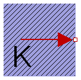
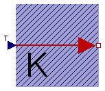
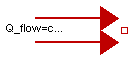
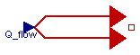

| Name | Description |
|---|---|
| Fixed temperature boundary condition in Kelvin | |
| PrescribedTemperature | Variable temperature boundary condition in Kelvin |
| Fixed heat flow boundary condition | |
| PrescribedHeatFlow | Prescribed heat flow boundary condition |

This model defines a fixed temperature T at its port in Kelvin, i.e., it defines a fixed temperature as a boundary condition.
| Type | Name | Default | Description |
|---|---|---|---|
| Temperature | T | Fixed temperature at port [K] |
| Type | Name | Description |
|---|---|---|
| HeatPort_b | port |
model FixedTemperature "Fixed temperature boundary condition in Kelvin" parameter Modelica.SIunits.Temperature T "Fixed temperature at port"; Interfaces.HeatPort_b port; equation port.T = T; end FixedTemperature;
 Modelica.Thermal.HeatTransfer.Sources.PrescribedTemperature
Modelica.Thermal.HeatTransfer.Sources.PrescribedTemperature
This model represents a variable temperature boundary condition. The temperature in [K] is given as input signal T to the model. The effect is that an instance of this model acts as an infinite reservoir able to absorb or generate as much energy as required to keep the temperature at the specified value.
| Type | Name | Description |
|---|---|---|
| HeatPort_b | port | |
| input RealInput | T |
model PrescribedTemperature "Variable temperature boundary condition in Kelvin" Interfaces.HeatPort_b port; Modelica.Blocks.Interfaces.RealInput T; equation port.T = T; end PrescribedTemperature;
 Modelica.Thermal.HeatTransfer.Sources.FixedHeatFlow
Modelica.Thermal.HeatTransfer.Sources.FixedHeatFlow
This model allows a specified amount of heat flow rate to be "injected" into a thermal system at a given port. The constant amount of heat flow rate Q_flow is given as a parameter. The heat flows into the component to which the component FixedHeatFlow is connected, if parameter Q_flow is positive.
If parameter alpha is > 0, the heat flow is mulitplied by (1 + alpha*(port.T - T_ref)) in order to simulate temperature dependent losses (which are given an reference temperature T_ref).
| Type | Name | Default | Description |
|---|---|---|---|
| HeatFlowRate | Q_flow | Fixed heat flow rate at port [W] | |
| Temperature | T_ref | 293.15 | Reference temperature [K] |
| LinearTemperatureCoefficient | alpha | 0 | Temperature coefficient of heat flow rate [1/K] |
| Type | Name | Description |
|---|---|---|
| HeatPort_b | port |
model FixedHeatFlow "Fixed heat flow boundary condition"
parameter Modelica.SIunits.HeatFlowRate Q_flow "Fixed heat flow rate at port";
parameter Modelica.SIunits.Temperature T_ref=293.15 "Reference temperature";
parameter Modelica.SIunits.LinearTemperatureCoefficient alpha=0
"Temperature coefficient of heat flow rate";
Interfaces.HeatPort_b port;
equation
port.Q_flow = -Q_flow*(1 + alpha*(port.T - T_ref));
end FixedHeatFlow;
 Modelica.Thermal.HeatTransfer.Sources.PrescribedHeatFlow
Modelica.Thermal.HeatTransfer.Sources.PrescribedHeatFlow
This model allows a specified amount of heat flow rate to be "injected" into a thermal system at a given port. The amount of heat is given by the input signal Q_flow into the model. The heat flows into the component to which the component PrescribedHeatFlow is connected, if the input signal is positive.
If parameter alpha is > 0, the heat flow is mulitplied by (1 + alpha*(port.T - T_ref)) in order to simulate temperature dependent losses (which are given an reference temperature T_ref).
| Type | Name | Default | Description |
|---|---|---|---|
| Temperature | T_ref | 293.15 | Reference temperature [K] |
| LinearTemperatureCoefficient | alpha | 0 | Temperature coefficient of heat flow rate [1/K] |
| Type | Name | Description |
|---|---|---|
| input RealInput | Q_flow | |
| HeatPort_b | port |
model PrescribedHeatFlow "Prescribed heat flow boundary condition"
parameter Modelica.SIunits.Temperature T_ref=293.15 "Reference temperature";
parameter Modelica.SIunits.LinearTemperatureCoefficient alpha=0
"Temperature coefficient of heat flow rate";
Modelica.Blocks.Interfaces.RealInput Q_flow;
Interfaces.HeatPort_b port;
equation
port.Q_flow = -Q_flow*(1 + alpha*(port.T - T_ref));
end PrescribedHeatFlow;